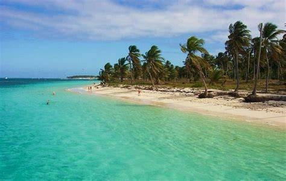

¡Hola! Soy el asistente de EcoMar. Puedo orientarte sobre corales, plásticos, pesca sostenible o ayudarte a armar un plan de acción. ¿En qué te ayudo?
Habla con Náyade, tu asistente de EcoMar
Pregunta sobre corales, plásticos, pesca sostenible o pide un plan de acción según tu municipio.
